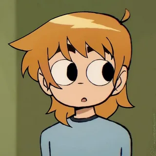

Projects
Sex Bob-Omb Band
Scott plays bass for the garage band Sex Bob-Omb with Stephen Stills and Kim Pine.
Learn MoreBattle of the Bands
Scott competed with Sex Bob-Omb in several Battle of the Bands tournaments across Toronto.
Learn MoreAbout Scott

Scott Pilgrim
Age: 23
Scott is a slacker from Toronto. He plays bass for Sex Bob-Omb, shares an apartment with Wallace Wells, and falls for Ramona Flowers.